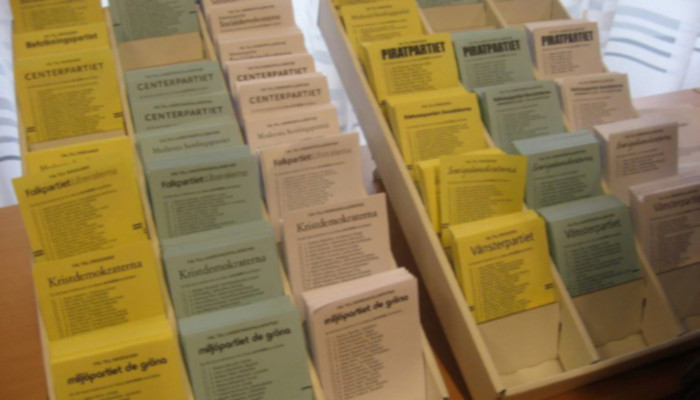
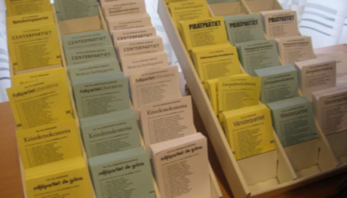
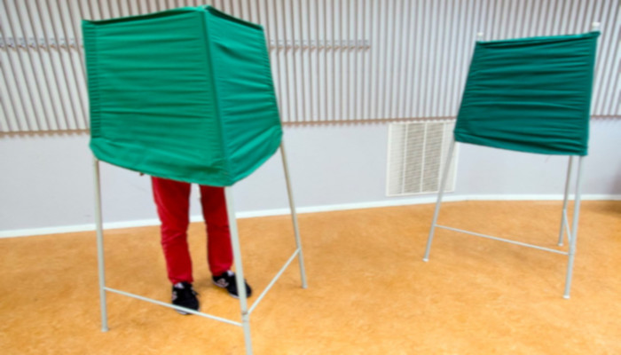
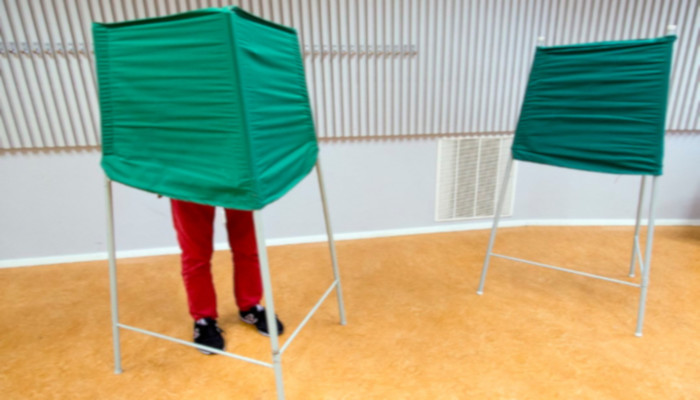

 

Hur går det till ?
Nu när du har medborgarskap och är folkbokförd så har du rätt att rösta på valet 2018. I det här webbsidan ska försöka hjälpa dig till hur röstar man och vilka regler det gäller. Vi kommer att ta upp partiet på ett enkelt sätt och mindre texter, bara beskriva deras politiska huvuddel. För om ni är intresserad och vill prata ställa frågor till politiker så finns det som kallas valstugor. Se på bilden åt höger ett valstuga i staden Göteborg.